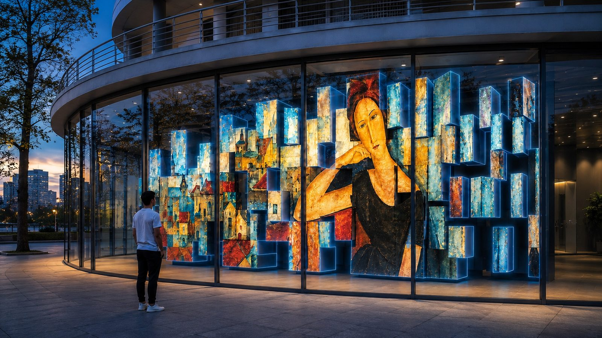
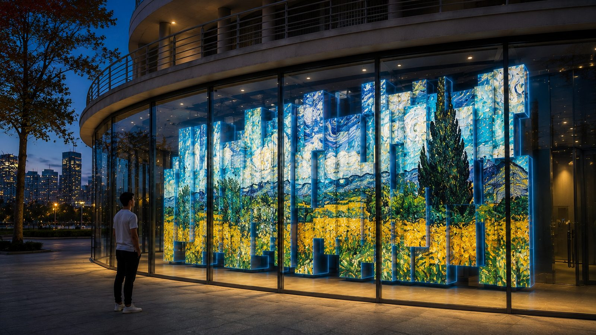

City
Facade That Reacts to People
When an architectural surface has to become the main media object of the space.
What it solves
- Draws attention from far away.
- Turns a facade or a window display into a living stage.
- Lets the space answer to the people in it.
How it works
A screen structure of complex geometry becomes part of the architecture. The image shifts, breaks into three-dimensional fragments, responds to movement and never quite repeats itself.
The building noticed me and changed.
Mechanics
- Custom-shaped LED modules
- Kinetic elements
- Cameras and sensors
- Generative graphics
- Content driven by the flow of people
Why this way
An ordinary screen keeps content inside a fixed rectangle. Art Screen makes the image itself part of the building's form. Reacting to viewers gives it the feel of a living object, and kinetics amplify the effect even without an elaborate storyline.
Where it applies
Facades • window displays • exhibitions • public spaces • offices • flagship stores
What it can show
From a compact window display to a full-size media facade. Behavior can follow the time of day, the weather, events, crowd density or the actions of one particular person.


Book a 30-minute call →